过滤器&监听器
第1章 过滤器简介
1.1 为什么要使用过滤器
在我们实际项目中，我们对访问某些资源的请求需要进条件的筛选、过滤。当这个请求满足特定的情况，才能让这个请求访问目标资源，如果不满足条件，就不让访问目标资源。比如说：对于访问管理员功能的请求，我们应该对这样的请求进行管理员权限的判断。如果当前用户拥有管理员权限，可以访问。反之不可以。我们java开发中需要很多这样过滤功能的操作，所以需要学习过滤器。
1.2 什么是过滤器
Filter：是Java中预先定义好了的接口，可以过滤不同的内容，具体怎么过滤，需要使用者定义一个实现类，然后实现接口中的过滤方法，在方法中书写过滤的条件。filter是对客户端访问资源的过滤，符合条件放行，不符合条件不放行
第2章 过滤器的应用场景
2.1 过滤论坛中用户发表内容中的非法字符
当我们上论坛或者贴吧这类的网站浏览信息时，我们发现，很多评论有时候是携带脏词的。而这些脏词不能显示出来，使用**代替了。类似这类的脏词过滤，我们可以通过java中的过滤器，对请求参数中的脏词进行过滤。
2.2 登录权限检查
当客户端浏览器发出一个请求，这个请求在访问到正真的目标资源之前，我们需要进行登录权限的检查。如果已经登录，我们就让这个请求通过，访问资源；如果没有登录，我们不能让请求访问目标资源。这样的操作需要在访问具体资源进行条件的过滤，我们可以使用过滤器来完成。
第3章 我的第一个过滤器开发步骤
3.1 Filter的API介绍
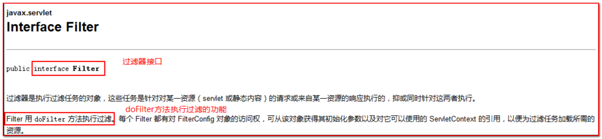
总结：
1.我们创建一个过滤器的话需要实现Filter这个接口
2.doFilter方法执行过滤器的功能
3.2 使用步骤
- 编写一个Servlet,路径为/demo1
- 创建一个类实现过滤器接口
- xml方式或者注解方式配置过滤器拦截的请求路径（urlPatterns = “/demo1”）
- 在doFilter方法中书写过滤任务
- FilterChain.doFilter方法放行
3.3 注意事项
过滤器doFilter方法默认拦截请求，如果需要经过过滤器之后，可以继续访问资源，要使用filterChain对象的doFilter方法放行。
3.4 XML方式代码演示
- servlet代码省略
- Filter代码
package com.itheima.myfilter;
import javax.servlet.*;
import java.io.IOException;
public class FilterDemo1 implements Filter{
@Override
public void init(FilterConfig filterConfig) throws ServletException {
}
@Override
public void doFilter(ServletRequest servletRequest, ServletResponse servletResponse, FilterChain filterChain) throws IOException, ServletException {
System.out.println("FilterDemo执行。。。");
//放行当前请求
filterChain.doFilter(servletRequest,servletResponse);
}
@Override
public void destroy() {
}
}
- web.xml配置filter
<filter>
<filter-name>FilterDemo1</filter-name>
<filter-class>com.itheima.myfilter.FilterDemo1</filter-class>
</filter>
<filter-mapping>
<filter-name>FilterDemo1</filter-name>
<url-pattern>/demo1</url-pattern>
</filter-mapping>
<servlet>
<servlet-name>ServletDemo1</servlet-name>
<servlet-class>com.itheima.myfilter.ServletDemo1</servlet-class>
</servlet>
<servlet-mapping>
<servlet-name>ServletDemo1</servlet-name>
<url-pattern>/demo1</url-pattern>
</servlet-mapping>3.5 注解方式代码演示
package com.itheima.myfilter;
import javax.servlet.*;
import javax.servlet.annotation.WebFilter;
import java.io.IOException;
@WebFilter(filterName = "FilterDemo2",urlPatterns = "/demo1")
public class FilterDemo2 implements Filter{
@Override
public void init(FilterConfig filterConfig) throws ServletException {
}
@Override
public void doFilter(ServletRequest servletRequest, ServletResponse servletResponse, FilterChain filterChain) throws IOException, ServletException {
System.out.println("FilterDemo执行。。。");
//放行当前请求
filterChain.doFilter(servletRequest,servletResponse);
}
@Override
public void destroy() {
}
}第4章 过滤器的执行流程
4.1 生活案例类比过滤器流程
平常生活中我们坐地铁或者火车，登车的时候需要先经过安检，安检通过了才能检票，检票通过了才能登车。安检和检票都相当于我们今天学习的过滤器。
4.2 图解过滤器的执行流程

第5章 过滤器的生命周期
过滤器我们已经看到了他的执行流程，但是，过滤器只有被创建出来才能执行，因此，我们还要了解过滤器生命周期。它包括了init、doFilter、destroy三个方法。
5.1 init方法
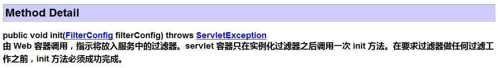
init方法是初始化方法。当过滤器被部署到web服务器时，服务器启动的时候执行一次。
5.2 doFilter方法
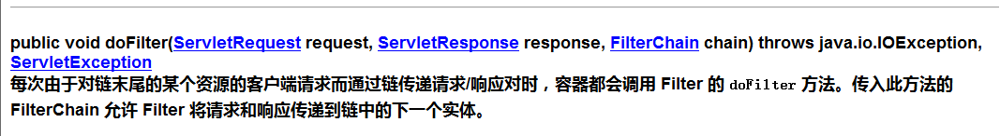
只要一个请求符合Filter拦截路径，都会执行doFilter。需要注意的是:如果需要让这个请求通过过滤器，继续访问目标资源，一定得调用FilterChain对象的doFilter方法，要不然请求就被过滤器拦截了。FilterChain对象的doFilter方法表示对于请求放行。
5.3 destory方法

过滤器的销毁方法。服务器停止或者将项目从服务器中移除的时候，过滤器销毁，执行一次destory方法。
5.4 过滤器生命周期总结(了解)
- 当服务器启动的时候，过滤器就被初始化了，执行过滤器的init方法
- 每当一个请求的路径是满足过滤器的配置路径，那么就会执行一次过滤器的doFilter方法
- 当服务器停止的时候，销毁过滤器，执行过滤器的destory方法
第6章 映射路径
刚才我们编写的Filter的例子 , 都是对某一个Servlet进行的过滤 , 其实我们是可以通过配置Filter的映射路径 , 从而可以使用一个过滤器拦截不同的请求路径 , 接下来我们来学习下Filter中映射路径的配置。
6.1 精确匹配模式
发出的路径需要与过滤器配置的路径完全一致，才能被这个过滤器过滤。例如需要对index.jsp进行过滤
我们只需要创建一个过滤器UrlFilter，配置过滤器的过滤路径为/index.jsp,过滤器代码如下：
package com.itheima.myfilter;
import javax.servlet.*;
import javax.servlet.annotation.WebFilter;
import java.io.IOException;
//urlPatterns = "/index.jsp"
public class UrlFillter implements Filter {
public void destroy() {
}
public void doFilter(ServletRequest req, ServletResponse resp, FilterChain chain) throws ServletException, IOException {
System.out.println("*********urlFilter拦截了请求***********");
chain.doFilter(req, resp);
}
public void init(FilterConfig config) throws ServletException {
}
} 只有访问http://localhost:9090/index.jsp 的时候，才会经过当前过滤器。除了当前请求之外的请求都不会经过这个过滤器。因为过滤器配置的过滤路径/index.jsp只会对index.jsp这个首页的请求进行拦截过滤，其他请求不会拦截过滤。
同理,假如需要对项目index.html进行过滤,只需要配置过滤器的路径为 /index.html;加入需要对项目下的img/a.jpg进行过滤,只需要配置过滤器的路径为 /img/a.jpg;
总之,精确匹配只对某一个指定的资源进行过滤.
6.2 模糊匹配模式
6.2.1 整个应用的配置
1.修改UrlFilter过滤器的配置的过滤路径为/*,代码如下:
<filter>
<filter-name>UrlFillter</filter-name>
<filter-class>com.itheima.myfilter.UrlFillter</filter-class>
</filter>
<filter-mapping>
<filter-name>UrlFillter</filter-name>
<url-pattern>/*</url-pattern>
</filter-mapping>2.浏览器发出当前项目的任何请求都会经过当前过滤器
6.2.2 指定目录下的路径配置
1.修改UrlFilter过滤器的注解配置的过滤路径为/admin/*,代码如下:
<filter>
<filter-name>UrlFillter</filter-name>
<filter-class>com.itheima.myfilter.UrlFillter</filter-class>
</filter>
<filter-mapping>
<filter-name>UrlFillter</filter-name>
<url-pattern>/admin/*</url-pattern>
</filter-mapping>2.浏览器发出当前项目下admin下的任何请求，都会经过过滤器。例如：
http://localhost:9090/admin/ss
http://localhost:9090/admin/bb/aa
6.2.3 指定后缀名的路径配置
1.修改UrlFilter过滤器的注解配置的过滤路径为*.jsp,代码如下:
<filter>
<filter-name>UrlFillter</filter-name>
<filter-class>com.itheima.myfilter.UrlFillter</filter-class>
</filter>
<filter-mapping>
<filter-name>UrlFillter</filter-name>
<url-pattern>*.jsp</url-pattern>
</filter-mapping>2.浏览器访问当前项目下的任何jsp页面，都会经过过滤器。例如：
http://localhost:9090/admin/1.jsp
http://localhost:9090/aa/2.jsp
第7章 拦截方式
有了上面学习的映射路径，我们可以控制过滤器过滤指定的内容，但是我们在访问资源的时候，有时是直接访问到指定资源的，有时是以转发的方式访问到的，这就需要我们要让过滤器可以区分不同的访问资源的方式，有不同的拦截方式。
7.1 request
request是默认的拦截方式：浏览器发出的请求都会进行拦截。
1.直接从地址栏访问index.jsp，Filter拦截
2.重定向到index.jsp，Filter拦截
7.1.1 代码演示
1.创建过滤器MethodFilter,配置过滤路径为/index.jsp，过滤器代码如下：
package com.itheima.myfilter;
import javax.servlet.*;
import javax.servlet.annotation.WebFilter;
import java.io.IOException;
public class MethodFilter implements Filter {
public void destroy() {
}
public void doFilter(ServletRequest req, ServletResponse resp, FilterChain chain) throws ServletException, IOException {
System.out.println("+++++++++MethodFilter过滤器执行了++++++++++");
chain.doFilter(req, resp);
}
public void init(FilterConfig config) throws ServletException {
}
}
2.创建RedirectServlet,重定向到index.jsp去，代码如下：
package com.itheima.servlet;
import javax.servlet.ServletException;
import javax.servlet.http.HttpServlet;
import javax.servlet.http.HttpServletRequest;
import javax.servlet.http.HttpServletResponse;
import java.io.IOException;
//urlPatterns = "/RedirectServlet"
public class RedirectServlet extends HttpServlet {
protected void doPost(HttpServletRequest request, HttpServletResponse response) throws ServletException, IOException {
doGet(request,response);
}
protected void doGet(HttpServletRequest request, HttpServletResponse response) throws ServletException, IOException {
System.out.println("RedirectServlet执行了，下面开始重定向到index.jsp去");
response.sendRedirect(request.getContextPath()+"/index.jsp");
}
}
3.浏览器发出请求http://localhost:9090/index.jsp，查看控制台：
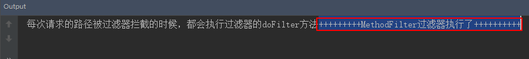
4.浏览器地址栏输入地址http://localhost:9090/RedirectServlet，控制台结果如下
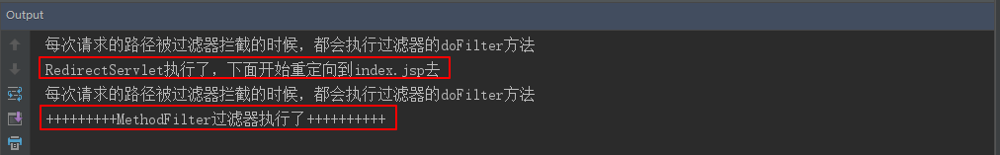
可以发现，无论是直接访问还是重定向访问index.jsp，都会执行过滤器
7.2 forward
按照过滤器默认的拦截方式，我们只能拦截浏览器对服务器的之间访问，但是，如果是服务器资源之间使用转发的方式，就无法访问了，因此，我们还有一种forward拦截方式：当前拦截方式表示只有在进行请求转发时，才会拦截请求进行过滤。
7.2.1 转发到index.jsp代码演示
1.创建ForwardServlet，转发到index.jsp去，代码如下
package com.itheima.servlet;
import javax.servlet.ServletException;
import javax.servlet.http.HttpServlet;
import javax.servlet.http.HttpServletRequest;
import javax.servlet.http.HttpServletResponse;
import java.io.IOException;
//urlPatterns = "/ForwardServlet"
public class ForwardServlet extends HttpServlet {
protected void doPost(HttpServletRequest request, HttpServletResponse response) throws ServletException, IOException {
doGet(request,response);
}
protected void doGet(HttpServletRequest request, HttpServletResponse response) throws ServletException, IOException {
System.out.println("ForwardServlet执行了，下面开始转发请求到index.jsp去");
request.getRequestDispatcher("/index.jsp").forward(request,response);
}
}
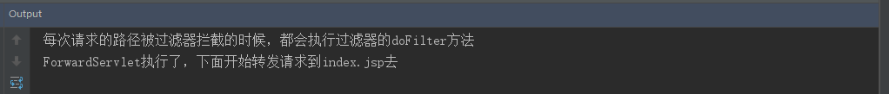
3.修改MethodFilter的拦截方式为forward。以下给大家演示xml方式配置和注解方式配置
xml方式配置
<filter> <filter-name>MethodFilter</filter-name> <filter-class>com.itheima.myfilter.MethodFilter</filter-class> </filter> <filter-mapping> <filter-name>MethodFilter</filter-name> <url-pattern>/index.jsp</url-pattern> <dispatcher>FORWARD</dispatcher> </filter-mapping>
注解方式配置
在注解上添加代码dispatcherTypes = DispatcherType.FORWARD
@WebFilter(filterName = "MethodFilter",urlPatterns = "/index.jsp",dispatcherTypes = DispatcherType.FORWARD)
4.重新启动服务器，浏览器再次访问请求：http://localhost:9090/ForwardServlet，查看控制台，发现当请求转发到index.jsp的时候，会经过过滤器的过滤。
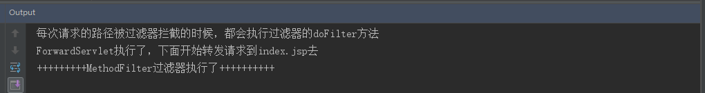
7.3 两种拦截方式能否共存
那么有了两种拦截方式，两种拦截方式能否共存呢？答案是：可以的。
在配置文件中添加两个dispatcher标签或者在MethodFilter注解的dispatcherTypes中以数组的形式添加两个拦截方式
- xml方式
<filter> <filter-name>MethodFilter</filter-name> <filter-class>com.itheima.myfilter.MethodFilter</filter-class> </filter> <filter-mapping> <filter-name>MethodFilter</filter-name> <url-pattern>/index.jsp</url-pattern> <dispatcher>FORWARD</dispatcher> <dispatcher>REQUEST</dispatcher> </filter-mapping>- 注解方式
@WebFilter(filterName = "MethodFilter",dispatcherTypes = {DispatcherType.FORWARD,DispatcherType.REQUEST},urlPatterns = "/*")浏览器再次访问请求：http://localhost:9090/ForwardServlet
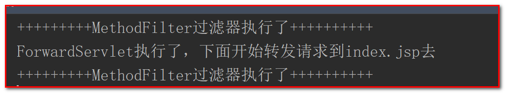
在转发前后都执行了过滤。
第8章 过滤器链
8.1 什么是过滤器链
再次回到我们生活中坐地铁或者火车的例子 , 登车的时候需要先经过安检，安检通过了才能检票，检票通过了才能登车 , 其中任意一个没有通过都是登不了车的 , 并且这两个过滤是有顺序。
同样，我们java代码中，有时需要对同一个请求，进行多次不同业务的过滤，所以我们java代码中需要多个过滤器。只有所有的过滤器都对请求进行了放行，请求才能访问到目标资源，只要多个过滤器中只有一个过滤器不放行请求，那么这个请求都不能够访问到目标资源。多个过滤器组成的一个整体我们称为过滤器链。而且，过滤器链中的过滤器是一个一个的执行的，一个过滤器执行完毕之后，会执行下一个过滤器，后面没有过滤器了，才会访问到目标资源。只要其中一个过滤器没有放行，那么这个过滤器后面的过滤器也都不会执行了。
8.2 过滤器链中多个过滤器的执行顺序
- 在xml配置方式中,过滤器的执行顺序是通过各自的
标签在web.xml的顺序执行的,谁在上面谁先执行.
- 在注解配置方式中,过滤器的执行顺序是通过过滤器的类名的字符顺 序决定的.
8.2.1 xml方式代码演示
- 新建FilterDemo3过滤器,对路径/demo1进行过滤
- 新建FilterDemo4过滤器,对路径/demo1进行过滤
- xml配置
<filter>
<filter-name>FilterDemo3</filter-name>
<filter-class>com.itheima.myfilter.FilterDemo3</filter-class>
</filter>
<filter>
<filter-name>FilterDemo4</filter-name>
<filter-class>com.itheima.myfilter.FilterDemo4</filter-class>
</filter>
<filter-mapping>
<filter-name>FilterDemo3</filter-name>
<url-pattern>/demo1</url-pattern>
</filter-mapping>
<filter-mapping>
<filter-name>FilterDemo4</filter-name>
<url-pattern>/demo1</url-pattern>
</filter-mapping>
上面这种方式配置的时候 FilterDemo3先执行,然后FilterDemo4执行;将两个filter的
8.2.2 注解方式代码演示
新建BFilterDemo,过滤器,对路径/demo1进行过滤
新建CFilterDemo,过滤器,对路径/demo1进行过滤
执行的时候BFilter先执行,然后才是CFilterDemo;
将CFilterDemo的类名换成AFilterDemo,就会发现AFilterDemo先执行了,然后才是BFilterDemo执行
注意 : 在我们以后开发中 , 过滤器一般都是别人写好的 , 我们只需要配置下即可 , 因为过滤器是别人写好的 , 我们一般不会去修改人家的源代码 , 在类上添加注解 ,所以以后过滤器的配置一般采用xml方式.
8.2 过滤器链的执行流程
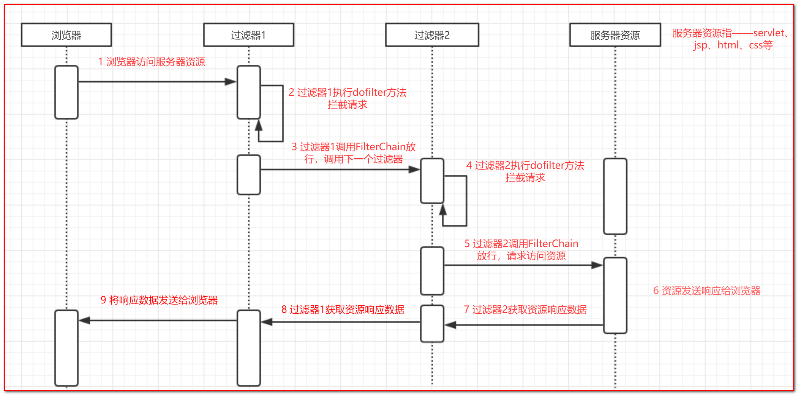
第9章 案例：非法字符
9.1 案例需求
当用户发出非法言论的时候，提示用户言论非法。
9.2 案例效果
1.在表单中输入含有非法字符的言论，点击提交按钮
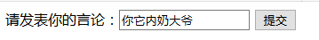
2.控制台显示如下：
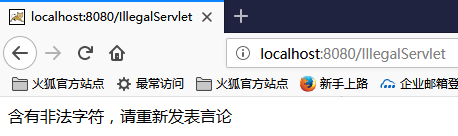
9.3 案例分析
1.创建一个表单用于发表言论。
2.创建一个txt文件，其中存入非法字符。
3.创建一个Filter，拦截请求。在init方法中将txt文件中的非法字符读取到内存中。
4.获取请求中的参数，对请求的参数进行非法字符的校验。
5.如果言论中不含有非法字符，就放行。
6.如果言论中含有非法字符，就拦截，并且提示用户非法言论。
9.4 实现步骤
1.创建一个表单，用于发表言论
form2.jsp代码如下：
<%@ page contentType="text/html;charset=UTF-8" language="java" %>
<html>
<head>
<title>Title</title>
</head>
<body>
<form method="post" action="${pageContext.request.contextPath }/IllegalServlet">
请发表你的言论：<input type="text" name="message">
<input type="submit" value="提交">
</form>
</body>
</html>
2.创建一个txt文件，存入非法字符
例如：
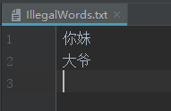
3.创建一个servlet用于接受表单提交的内容
IllegalServlet代码如下：
package com.itheima.servlet;
import javax.servlet.ServletException;
import javax.servlet.annotation.WebServlet;
import javax.servlet.http.HttpServlet;
import javax.servlet.http.HttpServletRequest;
import javax.servlet.http.HttpServletResponse;
import java.io.IOException;
@WebServlet(name = "/IllegalServlet",urlPatterns = "/IllegalServlet")
public class IllegalServlet extends HttpServlet {
protected void doPost(HttpServletRequest request, HttpServletResponse response) throws ServletException, IOException {
doGet(request,response);
}
protected void doGet(HttpServletRequest request, HttpServletResponse response) throws ServletException, IOException {
response.getWriter().write("你的言论发表成功");
}
}
4.创建一个过滤器，用来拦截请求，过滤请求中发表的言论的非法字符
IllegalFilter代码如下：
package com.itheima.myfilter;
import javax.servlet.*;
import javax.servlet.annotation.WebFilter;
import javax.servlet.http.HttpServletRequest;
import javax.servlet.http.HttpServletResponse;
import java.io.*;
import java.util.ArrayList;
import java.util.List;
//filterName = "IllegalFilter"
public class IllegalFilter implements Filter {
//声明一个集合用来保存非法字符库
private List<String> illegalWordsList = new ArrayList<>();
@Override
public void init(FilterConfig filterConfig) throws ServletException {
//获取非法字符文件的绝对路径
String path = filterConfig.getServletContext().getRealPath("/WEB-INF/classes/IllegalWords.txt");
try {
InputStreamReader isr = new InputStreamReader(new FileInputStream(path),"UTF-8");
BufferedReader br = new BufferedReader(isr);
String line = null;
//将文件中的非法字符读取到内存中
while ((line = br.readLine())!=null ){
illegalWordsList.add(line);
}
}catch (Exception e){
e.printStackTrace();
}
}
@Override
public void doFilter(ServletRequest servletRequest, ServletResponse servletResponse, FilterChain filterChain) throws IOException, ServletException {
//将ServletRequest和ServletResponse强转成http协议的请求和响应对象
HttpServletRequest request = (HttpServletRequest)servletRequest;
HttpServletResponse response = (HttpServletResponse)servletResponse;
response.setContentType("text/html;charset=utf-8");
//获取请求中的参数
request.setCharacterEncoding("utf-8");
String message = request.getParameter("message");
//遍历所有的非法字符，对用户发表的言论进行校验
for (String word:illegalWordsList){
System.out.println(message+":"+word+"====索引："+message.indexOf(word));
if((message.indexOf(word))!=-1){
response.getWriter().write("含有非法字符，请重新发表言论");
return;
}
}
filterChain.doFilter(servletRequest,servletResponse);
}
@Override
public void destroy() {
}
}
第10章 综合案例：解决全站乱码
10.1 案例需求
浏览器发出的任何请求，通过过滤器统一处理中文乱码。
10.2 案例效果
分别以get方式和post方式提交中文，servlet中不做中文乱码处理，直接获取参数，得到的参数不存在中文乱码问题。
10.3 案例分析
1.创建一个过滤器。
2.因为对所有的请求进行乱码的过滤，所以过滤器的过滤路径配置为/*
3.针对post请求处理乱码
10.4 实现步骤
1.创建一个form.jsp表单，用于测试过滤器解决乱码的功能
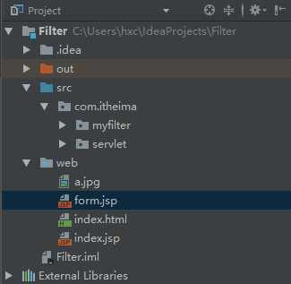
2.form.html代码：
<%@ page contentType="text/html;charset=UTF-8" language="java" %>
<html>
<head>
<title>Title</title>
</head>
<body>
<form action="${pageContext.request.contextPath }/encoding" method="post">
<input type="text" name="name"/>
<input type="submit" value="提交"/>
</form>
</body>
</html>
3.创建一个用于接收表单请求的EncodingServlet.
EncodingServlet代码：
package com.itheima.servlet;
import javax.servlet.ServletException;
import javax.servlet.annotation.WebServlet;
import javax.servlet.http.HttpServlet;
import javax.servlet.http.HttpServletRequest;
import javax.servlet.http.HttpServletResponse;
import java.io.IOException;
@WebServlet(name = "EncodingServlet" , urlPatterns = "/encoding")
public class EncodingServlet extends HttpServlet {
protected void doPost(HttpServletRequest request, HttpServletResponse response) throws ServletException, IOException {
doGet(request,response);
}
protected void doGet(HttpServletRequest request, HttpServletResponse response) throws ServletException, IOException {
//获取表单提交的参数
String name = request.getParameter("name");
System.out.println(name);
}
}
4.创建EncodingFilter用于乱码处理的过滤器
EncodingFilter代码如下：
package com.itheima.myfilter;
import javax.servlet.*;
import javax.servlet.annotation.WebFilter;
import javax.servlet.http.HttpServletRequest;
import java.io.IOException;
@WebFilter(filterName = "EncodingFilter",urlPatterns = "/*")
public class EncodingFilter implements Filter {
public void destroy() {
}
public void doFilter(ServletRequest req, ServletResponse resp, FilterChain chain) throws ServletException, IOException {
//首先
HttpServletRequest request = (HttpServletRequest)req;
resp.setContentType("text/html;charset=utf-8");
//获取请求的方式
String method = request.getMethod();
if("post".equalsIgnoreCase(method)){
//如果是post请求
request.setCharacterEncoding("utf-8");
chain.doFilter(request, resp);
//结束当前方法
return;
}
chain.doFilter(req, resp);
}
public void init(FilterConfig config) throws ServletException {
}
}
5.浏览器访问form.jsp页面，表单提交方式为post，表单输入中文
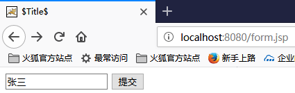
6.点击提交按钮，查看控制台，post乱码问题得到解决
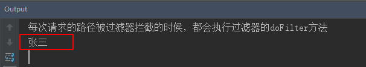
7.将表单的提交方式换成get，提交表单，查看控制台没有乱码问题。
第11章 监听器入门
11.1 什么是监听器
在实际生活着，我们很多商场有摄像头，监视着客户的一举一动。如果客户有违法行为，商场可以采取相应的措施。同样，在我们的java程序中，有时也需要监视某些事情，一旦被监视的对象发生相应的变化，我们应该采取相应的操作。这就需要用到java中的监听器。
web监听器是一种Servlet中的特殊的类，它们能帮助开发者监听web中的特定事件，比如ServletContext,HttpSession,ServletRequest的创建和销毁等。可以在某些动作前后增加处理，实现监控。
11.2 监听器的使用场景
11.2.1 系统启动时初始化信息
ServletContextListenner用来监听ServletContext对象的创建和销毁的。当项目启动的时候，servletContext对象被创建，会调用ServletContextListenner的contextInitialized方法。所以我们可以在此方法中初始化项目需要的信息。
扩展 : 后面学习spring框架的时候,我们会使用到它.
11.2.2 统计在线人数
我们知道，每当一个用户访问项目的时候，都会创建一个session会话。所以当前session会话被创建，当前在线用户+1，每当session会话被销毁，当前在线用户-1。HttpSessionListener可以用来监听session对象的创建和销毁的。所以可以在HttpSessionListener中的监听session对象创建和销毁的方法中控制在线人数的加减。
11.3 我的第一个监听器开发步骤
监听器在web开发中使用的比较少,见的机会就更少了,今天我们使用ServletContextListenner来带领大家学习下监听器,因为这个监听器是监听器中使用率最高的一个,且监听器的使用方式都差不多.
我们使用这个监听器可以在项目启动和销毁的时候做一些事情,例如,在项目启动的时候加载配置文件.
11.3.1 ServletContextListener接口的API介绍
void contextDestroyed(ServletContextEvent sce) 监听servletcontext销毁void contextInitialized(ServletContextEvent sce) 监听servletcontext创建
11.3.2 使用步骤
1.创建一个类实现ServletContextListenner接口
2.给这个类在xml中配置或者添加注解@WebListener
3.实现ServletContextListenner的contextInitialized和contextDestroyed方法。
11.3.3 xml配置方式演示
- listener代码如下:
package com.itheima.listenner;
import javax.servlet.ServletContext;
import javax.servlet.ServletContextEvent;
import javax.servlet.ServletContextListener;
public class MyServletContextListenner1 implements ServletContextListener {
@Override
public void contextInitialized(ServletContextEvent servletContextEvent) {
System.out.println("服务器启动，servletContext被创建了");
}
@Override
public void contextDestroyed(ServletContextEvent servletContextEvent) {
System.out.println("服务器停止，servletContext被销毁了");
}
}
- web.xml配置如下
<listener>
<listener-class>com.itheima.listenner.MyServletContextListenner1</listener-class>
</listener>
11.3.4 注解方式演示
package com.itheima.listenner;
import javax.servlet.ServletContext;
import javax.servlet.ServletContextEvent;
import javax.servlet.ServletContextListener;
import javax.servlet.annotation.WebListener;
@WebListener
public class MyServletContextListenner2 implements ServletContextListener {
@Override
public void contextInitialized(ServletContextEvent servletContextEvent) {
System.out.println("服务器启动，servletContext被创建了");
//ServletContextEvent 被监听对象的事件源,可以通过它获取被监听对象ServletContext
ServletContext servletContext = servletContextEvent.getServletContext();
}
@Override
public void contextDestroyed(ServletContextEvent servletContextEvent) {
System.out.println("服务器停止，servletContext被销毁了");
}
}
11.4 (自学) ServletContextAttributeListener
作用 : 可以检测ServletContext域中属性的变化.
具体为:
- 将某个属性添加到ServletContext域中
- ServletContext域中某个属性值被替换
- 将某个属性从ServletContext域中移除
11.4.1 API介绍
void attributeAdded(ServletContextAttributeEvent scab) 监听属性添加到servletcontext中void attributeRemoved(ServletContextAttributeEvent scab) 监听属性从servletcontext中移除void attributeReplaced(ServletContextAttributeEvent scab) 监听属性从servletcontext中被替换
11.4.2 使用步骤
1.创建一个类实现ServletContextAttributeListenner接口
2.给这个类添加注解@WebListener,(也可以使用配置文件的方式,只需要在web.xml中使用listener标签配置一下)
3.实现ServletContextAttributeListenner接口的方法
4.创建一个servlet，doGet方法中分别向servletContext对象中添加、替换、删除属性
11.4.3 案例代码
MyServletContextAttributeListenner代码：
package com.itheima.listenner;
import javax.servlet.ServletContext;
import javax.servlet.ServletContextAttributeEvent;
import javax.servlet.ServletContextAttributeListener;
import javax.servlet.annotation.WebListener;
@WebListener
public class MyServletContextAttributeListenner implements ServletContextAttributeListener {
@Override
public void attributeAdded(ServletContextAttributeEvent servletContextAttributeEvent) {
//获取被监听的对象
ServletContext servletContext = servletContextAttributeEvent.getServletContext();
//获取被添加到servletContext对象中的属性名
String name = servletContextAttributeEvent.getName();
//获取被添加到servletContext对象中的属性值
String value = (String)servletContextAttributeEvent.getValue();
System.out.println("被添加到servletContext对象中的属性是："+name+"="+value);
}
@Override
public void attributeRemoved(ServletContextAttributeEvent servletContextAttributeEvent) {
//获取被监听的对象
ServletContext servletContext = servletContextAttributeEvent.getServletContext();
//获取被移出servletContext对象中的属性名
String name = servletContextAttributeEvent.getName();
//获取被移出servletContext对象中的属性值
String value = (String)servletContextAttributeEvent.getValue();
System.out.println("被移出servletContext对象中的属性是："+name+"="+value);
}
@Override
public void attributeReplaced(ServletContextAttributeEvent servletContextAttributeEvent) {
//获取被监听的对象
ServletContext servletContext = servletContextAttributeEvent.getServletContext();
//获取servletContext对象中被替换的属性名
String name = servletContextAttributeEvent.getName();
//获取servletContext对象中被替换的属性值
String value = (String)servletContextAttributeEvent.getValue();
System.out.println("servletContext对象中的被替换前属性是："+name+"="+value);
}
}
创建一个servlet,测试往ServletContext中添加属性,替换属性和删除属性：
package com.itheima.servlet;
import javax.servlet.ServletContext;
import javax.servlet.ServletException;
import javax.servlet.annotation.WebServlet;
import javax.servlet.http.HttpServlet;
import javax.servlet.http.HttpServletRequest;
import javax.servlet.http.HttpServletResponse;
import java.io.IOException;
@WebServlet(name = "ServletDemo",urlPatterns = "/servletDemo")
public class ServletDemo extends HttpServlet {
protected void doPost(HttpServletRequest request, HttpServletResponse response) throws ServletException, IOException {
doGet(request,response);
}
protected void doGet(HttpServletRequest request, HttpServletResponse response) throws ServletException, IOException {
ServletContext servletContext = getServletContext();
//向servletContext对象中添加属性username:zhangsan
servletContext.setAttribute("username","zhangsan");
//替换servletContext对象中的属性username:lisi
servletContext.setAttribute("username","lisi");
//移除servletContext对象中的属性username
servletContext.removeAttribute("username");
}
}